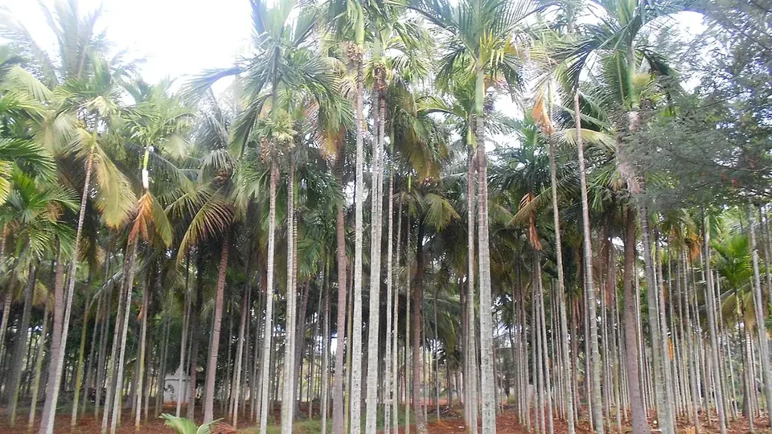

ಅಡಿಕೆ ಬೆಳೆ ಮಾರ್ಗದರ್ಶಿ — ಕರ್ನಾಟಕ
Arecanut Cultivation & Disease Guide — Karnataka
ಅಡಿಕೆಯ ಎರಡು ದೊಡ್ಡ ರೋಗಗಳಲ್ಲಿ ಒಂದನ್ನು ತಡೆಯಬಹುದು, ಇನ್ನೊಂದನ್ನು ಸಾಧ್ಯವಿಲ್ಲ. ಈ ವ್ಯತ್ಯಾಸ ಗೊತ್ತಿಲ್ಲದೆ ಪ್ರತಿ ವರ್ಷ ದೊಡ್ಡ ಮೊತ್ತ ವ್ಯರ್ಥವಾಗುತ್ತದೆ.
✍️ Kunal Rajput — KrashiMitra⏱️ 10 ನಿಮಿಷ ಓದು📅 ಆಗಸ್ಟ್ 2026

ಬೆಳೆದು ನಿಂತ ಅಡಿಕೆ ತೋಟ. ಚಿತ್ರ: ವಿಕಿಮೀಡಿಯಾ ಕಾಮನ್ಸ್.
ಯಾವುದಕ್ಕೆ ಖರ್ಚು ಮಾಡಬೇಕು, ಯಾವುದಕ್ಕೆ ಬೇಡ
📉
90%
ಕೊಳೆ ರೋಗದಿಂದ ಸಂಭವನೀಯ ನಷ್ಟ
💧
ಶೇ.1
ಬೋರ್ಡೊ ದ್ರಾವಣ
🍂
16,000 ಹೆ.
ಹಳದಿ ಎಲೆ ರೋಗ ಬಾಧಿತ
📖
ಪೀಠಿಕೆ
ಮಲೆನಾಡು ಮತ್ತು ಕರಾವಳಿಯ ಕುಟುಂಬಗಳ ವರ್ಷದ ಲೆಕ್ಕವನ್ನೇ ನಿರ್ಧರಿಸುವ ಬೆಳೆ
ಅಡಿಕೆ. ದೇಶದ ಅಡಿಕೆಯ ಬಹುಪಾಲು ಬರುವುದು ಕರ್ನಾಟಕದಿಂದ —
ದಕ್ಷಿಣ ಕನ್ನಡ, ಉತ್ತರ ಕನ್ನಡ, ಉಡುಪಿ, ಶಿವಮೊಗ್ಗ, ಚಿಕ್ಕಮಗಳೂರು, ಹಾಸನ, ದಾವಣಗೆರೆ,
ಚಿತ್ರದುರ್ಗ, ತುಮಕೂರು ಮತ್ತು ಕೊಡಗು ಜಿಲ್ಲೆಗಳಲ್ಲಿ ಅಡಿಕೆ ತೋಟವೇ ಪ್ರಧಾನ ಆದಾಯ.
ಅಡಿಕೆ ಬೆಳೆಗಾರನ ಮುಂದೆ ಇರುವ ಎರಡು ದೊಡ್ಡ ರೋಗಗಳು ಒಂದೇ ರೀತಿಯವು ಅಲ್ಲ, ಮತ್ತು ಈ
ವ್ಯತ್ಯಾಸ ಗೊತ್ತಿಲ್ಲದೆ ಪ್ರತಿ ವರ್ಷ ಲಕ್ಷಾಂತರ ರೂಪಾಯಿ ವ್ಯರ್ಥವಾಗುತ್ತದೆ.
ಕೊಳೆ ರೋಗ ತಡೆಯಬಹುದಾದದ್ದು — ಸರಿಯಾದ ಸಮಯಕ್ಕೆ ಬೋರ್ಡೊ ಸಿಂಪಡಿಸಿದರೆ
90% ನಷ್ಟ ಉಳಿಯುತ್ತದೆ. ಆದರೆ ಹಳದಿ ಎಲೆ ರೋಗಕ್ಕೆ ಇಂದಿಗೂ ಔಷಧಿ ಇಲ್ಲ —
ಅದನ್ನು ಗುಣಪಡಿಸುತ್ತೇವೆ ಎಂದು ಮಾರುವ ಯಾವುದೇ ಔಷಧಿ ದುಡ್ಡು ಹಾಳು ಮಾಡುತ್ತದೆ.
ಈ ಲೇಖನ ಆ ಎರಡನ್ನೂ ಬೇರೆ ಬೇರೆಯಾಗಿ, ಸಂಖ್ಯೆಗಳ ಸಮೇತ ವಿವರಿಸುತ್ತದೆ.
ಜಾಹೀರಾತು
🌴
ತಳಿ ಆಯ್ಕೆ — ಒಮ್ಮೆ ನೆಟ್ಟರೆ ಮೂವತ್ತು ವರ್ಷ
ಅಡಿಕೆ ಒಂದು ವರ್ಷದ ಬೆಳೆ ಅಲ್ಲ. ಇಂದು ನೆಟ್ಟ ಸಸಿ ಮೂರು ದಶಕ ನಿಮ್ಮ ಜೊತೆ ಇರುತ್ತದೆ,
ಹಾಗಾಗಿ ತಳಿಯ ತಪ್ಪು ಆಯ್ಕೆಯನ್ನು ನಂತರ ಸರಿಪಡಿಸಲು ಆಗುವುದಿಲ್ಲ. ಕೆಳಗಿನ ಇಳುವರಿ
ಅಂಕಿಗಳು ICAR-CPCRI ಬಿಡುಗಡೆ ಮಾಡಿದ ತಳಿಗಳದ್ದು, ಚಾಲಿ ಲೆಕ್ಕದಲ್ಲಿ.
ತಳಿ
ಬಗೆ
ಇಳುವರಿ (ಕೆ.ಜಿ. ಚಾಲಿ / ಮರ / ವರ್ಷ)
ವಿಶೇಷತೆ
ಸ್ವರ್ಣಮಂಗಳ
ಎತ್ತರ
3.88
ಅತಿ ಹೆಚ್ಚು ಇಳುವರಿ, ದೊಡ್ಡ ಕಾಯಿ, ಹೆಚ್ಚು ತಿರುಳು
ಮೋಹಿತ್ನಗರ
ಎತ್ತರ
3.67
ಏಕರೂಪದ ಬೆಳವಣಿಗೆ, ಚೆನ್ನಾಗಿ ಜೋಡಿಸಿದ ಗೊನೆ
ಸುಮಂಗಳ
ಎತ್ತರ
3.28
ಚಾಲಿಗೆ ಅತ್ಯುತ್ತಮ, ಬಾಗಿದ ಸುಳಿ
ಶ್ರೀಮಂಗಳ
ಎತ್ತರ
3.18
ಗಟ್ಟಿ ಕಾಂಡ, ಉದ್ದ ಗೆಣ್ಣು
ಮಂಗಳ
ಅರೆ-ಎತ್ತರ
2.90
ಬೇಗ ಫಸಲಿಗೆ ಬರುತ್ತದೆ, ಕಡಿಮೆ ಎತ್ತರ — ಕೊಯ್ಲು ಸುಲಭ
VTLAH-2
ಕುಬ್ಜ ಹೈಬ್ರಿಡ್
2.64
ಕುಳ್ಳ ಮರ, ಬೇಗ ಇಳುವರಿ ಸ್ಥಿರ
VTLAH-1
ಕುಬ್ಜ ಹೈಬ್ರಿಡ್
2.54
ಕುಳ್ಳ, ಸಣ್ಣ ಸುಳಿ — ದಟ್ಟ ನೆಡುವಿಕೆಗೆ
🌱
ಕುಬ್ಜ ತಳಿಗಳ ಪ್ರತಿ ಮರದ ಇಳುವರಿ ಕಡಿಮೆ ಕಾಣಬಹುದು, ಆದರೆ ಮರ ಕುಳ್ಳವಾದ್ದರಿಂದ
ಕೊಯ್ಲಿನ ಕೂಲಿ ಮತ್ತು ಅಪಾಯ ಎರಡೂ ಕಡಿಮೆ. ಮರ ಹತ್ತುವ ಆಳು
ಸಿಗದ ಇಂದಿನ ಪರಿಸ್ಥಿತಿಯಲ್ಲಿ ಇದು ಸಣ್ಣ ಲಾಭ ಅಲ್ಲ.
🚜
ನೆಡುವಿಕೆ ಮತ್ತು ತೋಟದ ನಿರ್ವಹಣೆ
ಅಂತರ: ಸಾಮಾನ್ಯ ಶಿಫಾರಸು 2.7 × 2.7 ಮೀಟರ್ ಚೌಕ ಪದ್ಧತಿ.
ದಟ್ಟವಾಗಿ ನೆಟ್ಟರೆ ಗಾಳಿ ಆಡುವುದಿಲ್ಲ, ತೇವ ನಿಂತು ಕೊಳೆ ರೋಗಕ್ಕೆ ದಾರಿಯಾಗುತ್ತದೆ.
ನೆಡುವ ಸಮಯ: ಮುಂಗಾರು ಸ್ಥಿರವಾದ ನಂತರ, ಸಾಮಾನ್ಯವಾಗಿ
ಜೂನ್ ಕೊನೆಯಿಂದ ಆಗಸ್ಟ್ವರೆಗೆ.
ನೆರಳು: ಎಳೆಯ ಸಸಿಗೆ ಮೊದಲ ಎರಡು ವರ್ಷ ನೆರಳು ಬೇಕು.
ಬಾಳೆ ಅಥವಾ ಹರಳು ಸಾಲು ಹಾಕಿ ನೆರಳು ಕೊಡುವುದು ಅಗ್ಗದ ದಾರಿ.
ಒಳಚರಂಡಿ: ಅಡಿಕೆ ನೀರು ಬಯಸುತ್ತದೆ, ಆದರೆ ನಿಂತ ನೀರನ್ನು
ಸಹಿಸುವುದಿಲ್ಲ. ಮಳೆಗಾಲಕ್ಕೆ ಮೊದಲು ತೋಟದ ಚರಂಡಿ ಸ್ವಚ್ಛಗೊಳಿಸಿ — ಇದು
ಬೇರು ಕೊಳೆ ಮತ್ತು ಹಳದಿ ಎಲೆ ಎರಡರ ತೀವ್ರತೆಯನ್ನೂ ಕಡಿಮೆ ಮಾಡುತ್ತದೆ.
ಮಿಶ್ರ ಬೆಳೆ: ಅಡಿಕೆ ತೋಟದಲ್ಲಿ ಕಾಳುಮೆಣಸು, ಬಾಳೆ, ಕೋಕೋ
ಅಥವಾ ಏಲಕ್ಕಿ ಬೆಳೆದರೆ ಅದೇ ನೀರು ಮತ್ತು ಅದೇ ಕೂಲಿಯಲ್ಲಿ ಎರಡನೇ ಆದಾಯ.
ಅಡಿಕೆ ದರ ಬಿದ್ದ ವರ್ಷ ಇದೇ ಆಸರೆ.
ಜಾಹೀರಾತು
🔍
ಕೊಳೆ ರೋಗ (ಮಹಾಳಿ) — ಗುರುತಿಸುವುದು ಹೇಗೆ
ಕೊಳೆ ರೋಗPhytophthora meadii ಎಂಬ ಶಿಲೀಂಧ್ರದಿಂದ
ಬರುತ್ತದೆ. ಇದು ನೈಋತ್ಯ ಮುಂಗಾರು ಆರಂಭವಾದ 15–20 ದಿನಗಳ ನಂತರ
ದಾಳಿ ಮಾಡುತ್ತದೆ, ಮತ್ತು ಮಳೆ ದೀರ್ಘವಾಗಿ ತೇವಾಂಶ ಹೆಚ್ಚಿದ್ದಷ್ಟೂ ತೀವ್ರವಾಗುತ್ತದೆ.
ನಿಯಂತ್ರಿಸದಿದ್ದರೆ 90%ವರೆಗೆ ಫಸಲು ನಷ್ಟ ಆಗಬಹುದು.
ಗುರುತಿಸುವ ಅಂಶ
✅ ಆರೋಗ್ಯಕರ ಮರ
❌ ಕೊಳೆ ರೋಗ ಪೀಡಿತ
ಕಾಯಿಯ ಮೇಲ್ಮೈ
ಏಕರೂಪದ ಹಸಿರು, ನುಣುಪು
ನೀರು ನೆನೆದಂತಹ ಕಪ್ಪು ಕಂದು ಕಲೆ
ಕಾಯಿ ಉದುರುವಿಕೆ
ಸಹಜ, ಅತಿ ಕಡಿಮೆ
ಮಳೆಗಾಲದಲ್ಲಿ ರಾಶಿ ರಾಶಿ ಎಳೆ ಕಾಯಿ ಉದುರುತ್ತದೆ
ತೊಟ್ಟಿನ ಭಾಗ
ಗಟ್ಟಿ, ಹಸಿರು
ಕೊಳೆತು ಮೃದು, ಬಿಳಿ ಶಿಲೀಂಧ್ರದ ಪದರ
ಗೊನೆ
ಪೂರ್ಣ ತುಂಬಿದೆ
ಅರ್ಧ ಖಾಲಿ, ಒಣಗಿದ ದಿಂಡು
ವಾಸನೆ
ಇಲ್ಲ
ಕೊಳೆತ ವಾಸನೆ, ತೋಟದ ನೆಲದಲ್ಲಿ ಉದುರಿದ ಕಾಯಿ
🛡️
ಖರ್ಚಿಲ್ಲದ ಮುನ್ನೆಚ್ಚರಿಕೆ
ಸಿಂಪರಣೆಗೆ ಮೊದಲು ಇವು. ಇವಕ್ಕೆ ಒಂದು ರೂಪಾಯಿ ಔಷಧಿ ಬೇಡ, ಆದರೆ ಸಿಂಪರಣೆಯ
ಪರಿಣಾಮವನ್ನು ಇವೇ ನಿರ್ಧರಿಸುತ್ತವೆ.
ಉದುರಿದ ಕಾಯಿ ಆರಿಸಿ ಸುಡಿ: ನೆಲದಲ್ಲಿ ಬಿದ್ದ ರೋಗಪೀಡಿತ ಕಾಯಿಯೇ
ಮುಂದಿನ ವರ್ಷದ ರೋಗದ ಮೂಲ. ತೋಟದಲ್ಲೇ ಬಿಡಬೇಡಿ.
ಒಣಗಿದ ಸೋಗೆ ಮತ್ತು ದಿಂಡು ತೆಗೆಯಿರಿ: ಮಳೆಗಾಲಕ್ಕೆ ಮೊದಲು
ಮರ ಸ್ವಚ್ಛ ಮಾಡಿದರೆ ಗಾಳಿ ಆಡುತ್ತದೆ, ತೇವ ಬೇಗ ಆರುತ್ತದೆ.
ಚರಂಡಿ ಸರಿಪಡಿಸಿ: ನೀರು ನಿಲ್ಲುವ ಜಾಗದಲ್ಲೇ ರೋಗ ಮೊದಲು ಕಾಣುತ್ತದೆ.
ಸರಿಯಾದ ಅಂತರ: ದಟ್ಟ ತೋಟದಲ್ಲಿ ಸಿಂಪಡಿಸಿದ ಔಷಧಿ ಗೊನೆಯವರೆಗೆ
ತಲುಪುವುದೇ ಇಲ್ಲ.
ಸಮತೋಲಿತ ಗೊಬ್ಬರ: ಪೊಟ್ಯಾಷ್ ಕಡಿಮೆ ಬಿದ್ದ ಮರ ರೋಗಕ್ಕೆ ಬೇಗ
ತುತ್ತಾಗುತ್ತದೆ. ಮಣ್ಣು ಪರೀಕ್ಷೆ ಮಾಡಿಸಿ.
🧪
ಬೋರ್ಡೊ ದ್ರಾವಣ — ತಯಾರಿ ಮತ್ತು ಸಿಂಪರಣೆ
ಕೊಳೆ ರೋಗಕ್ಕೆ ಇಂದಿಗೂ ಅತ್ಯಂತ ವಿಶ್ವಾಸಾರ್ಹ ಮತ್ತು ಅಗ್ಗದ ಪರಿಹಾರ
ಶೇಕಡಾ 1ರ ಬೋರ್ಡೊ ದ್ರಾವಣ. ತಯಾರಿ ಸರಳ:
100 ಲೀಟರ್ ನೀರಿಗೆ 1 ಕೆ.ಜಿ. ಮೈಲುತುತ್ತು ಮತ್ತು
1 ಕೆ.ಜಿ. ಸುಣ್ಣ. ಎರಡನ್ನೂ ಬೇರೆ ಬೇರೆ ಪಾತ್ರೆಯಲ್ಲಿ ಕರಗಿಸಿ,
ನಂತರ ಬೆರೆಸಿ.
ಸಿಂಪರಣೆ
ಯಾವಾಗ
ಏನು ಬಳಸಬೇಕು
ಮೊದಲನೆಯದು
ಮುಂಗಾರು ಆರಂಭಕ್ಕೆ ಮೊದಲು (ಮೇ ಕೊನೆ – ಜೂನ್ ಮೊದಲ ವಾರ)
ಶೇ.1 ಬೋರ್ಡೊ ದ್ರಾವಣ
ಎರಡನೆಯದು
ಮೊದಲ ಸಿಂಪರಣೆಯ ಸುಮಾರು 40 ದಿನಗಳ ನಂತರ
ಶೇ.1 ಬೋರ್ಡೊ ದ್ರಾವಣ
ಮೂರನೆಯದು
ಮಳೆ ದೀರ್ಘವಾದರೆ ಮಾತ್ರ
ಶೇ.1 ಬೋರ್ಡೊ ದ್ರಾವಣ
ಪರ್ಯಾಯ
ಬೋರ್ಡೊ ತಯಾರಿಸಲು ಆಗದಿದ್ದರೆ
ಮ್ಯಾಂಡಿಪ್ರೊಪಮಿಡ್ 23.4% SC — ಲೀಟರ್ ನೀರಿಗೆ 1 ಮಿ.ಲೀ.
💡
ಬೋರ್ಡೊ ದ್ರಾವಣವನ್ನು ತಯಾರಿಸಿದ ದಿನವೇ ಬಳಸಿ. ಇಡೀ ಗೊನೆ
ಒದ್ದೆಯಾಗುವಂತೆ ಸಿಂಪಡಿಸಬೇಕು — ಮೇಲಿನಿಂದ ಸಿಂಪಡಿಸಿ ಗೊನೆ ಒಣಗಿ ಉಳಿದರೆ
ಆ ಸಿಂಪರಣೆ ವ್ಯರ್ಥ. ಮಳೆ ಬಿಡುವು ನೋಡಿ ಸಿಂಪಡಿಸಿ.
⚠️
ಈ ಪ್ರಮಾಣಗಳು ಸಾಮಾನ್ಯ ಶಿಫಾರಸು. ಬಳಸುವ ಮೊದಲು ಡಬ್ಬಿಯ
CIB&RC ಲೇಬಲ್ ಓದಿ, ಮತ್ತು ನಿಮ್ಮ ತಾಲೂಕಿನ
ತೋಟಗಾರಿಕೆ ಇಲಾಖೆ, ರೈತ ಸಂಪರ್ಕ ಕೇಂದ್ರ
ಅಥವಾ ಕೃಷಿ ವಿಜ್ಞಾನ ಕೇಂದ್ರದಲ್ಲಿ ಖಚಿತಪಡಿಸಿಕೊಳ್ಳಿ.
ಜಿಲ್ಲೆಯಿಂದ ಜಿಲ್ಲೆಗೆ ಶಿಫಾರಸು ಬದಲಾಗುತ್ತದೆ.
🍂
ಹಳದಿ ಎಲೆ ರೋಗ — ಸತ್ಯ ಏನೆಂದರೆ
ಹಳದಿ ಎಲೆ ರೋಗ (Yellow Leaf Disease) ಒಂದು
ಫೈಟೊಪ್ಲಾಸ್ಮಾದಿಂದ ಬರುತ್ತದೆ — ಇದು ಮರದ ರಸನಾಳದೊಳಗೆ ಬದುಕುವ
ಸೂಕ್ಷ್ಮ ಜೀವಿ. ರಾಜ್ಯದಲ್ಲಿ ಸುಮಾರು 16,000 ಹೆಕ್ಟೇರ್ ಅಡಿಕೆ
ತೋಟ ಇದರಿಂದ ಬಾಧಿತವಾಗಿದೆ; ದಕ್ಷಿಣ ಕನ್ನಡದ ಸುಳ್ಯ ತಾಲೂಕು ಮತ್ತು ಕೊಡಗು,
ಚಿಕ್ಕಮಗಳೂರಿನ ಕೆಲ ಭಾಗಗಳಲ್ಲಿ ಇದು ತೀವ್ರ.
⚠️
ಹಳದಿ ಎಲೆ ರೋಗಕ್ಕೆ ಇಂದಿಗೂ ಯಾವುದೇ ಔಷಧಿ ಇಲ್ಲ. ಸೋಂಕಿತ
ಮರದಿಂದ ಫೈಟೊಪ್ಲಾಸ್ಮಾವನ್ನು ಹೊರಹಾಕುವ ಸಾಬೀತಾದ ಚಿಕಿತ್ಸೆ ಎಲ್ಲಿಯೂ ಇಲ್ಲ.
"ಹಳದಿ ಎಲೆ ರೋಗ ಗುಣಪಡಿಸುತ್ತದೆ" ಎಂದು ಮಾರುವ ಟಾನಿಕ್, ಚುಚ್ಚುಮದ್ದು ಅಥವಾ
ಪುಡಿ — ಯಾವುದನ್ನೂ ಖರೀದಿಸಬೇಡಿ. ಆ ದುಡ್ಡನ್ನು ಒಳಚರಂಡಿ, ಗೊಬ್ಬರ ಮತ್ತು
ಪರ್ಯಾಯ ಬೆಳೆಗೆ ಹಾಕಿದರೆ ನಿಜವಾದ ಪ್ರಯೋಜನ ಸಿಗುತ್ತದೆ.
ಗುಣಪಡಿಸಲು ಆಗದಿದ್ದರೂ, ರೋಗದ ವೇಗವನ್ನು ತಗ್ಗಿಸಿ ಮರವನ್ನು ಕೆಲವು ವರ್ಷ ಹೆಚ್ಚು
ದುಡಿಸಿಕೊಳ್ಳಬಹುದು. ಮಾಡಬೇಕಾದದ್ದು ಇಷ್ಟು:
ಆರೋಗ್ಯಕರ ಪ್ರದೇಶದಿಂದಲೇ ಸಸಿ ತನ್ನಿ: ರೋಗ ಇರುವ ತೋಟದ
ಬೀಜದಿಂದ ಸಸಿ ಮಾಡಬೇಡಿ. ಹೊಸ ತೋಟಕ್ಕೆ ಇದೇ ಅತಿ ಮುಖ್ಯ ರಕ್ಷಣೆ.
ತೀವ್ರ ಬಾಧಿತ ಮರ ತೆಗೆಯಿರಿ: ಫಸಲು ಕೊಡದ ರೋಗಗ್ರಸ್ತ ಮರ
ಸೋಂಕಿನ ಮೂಲವಾಗಿ ಉಳಿಯುತ್ತದೆ. ಅದನ್ನು ಉಳಿಸಿಕೊಳ್ಳುವುದು ಭಾವನಾತ್ಮಕ
ನಿರ್ಧಾರವೇ ಹೊರತು ಆರ್ಥಿಕ ನಿರ್ಧಾರ ಅಲ್ಲ.
ಸಮತೋಲಿತ ಪೋಷಣೆ: ಮಣ್ಣು ಪರೀಕ್ಷೆ ಆಧರಿಸಿ ಗೊಬ್ಬರ,
ಸಾಕಷ್ಟು ಸಾವಯವ ಗೊಬ್ಬರ. ಬಲವಾದ ಮರ ಹೆಚ್ಚು ಕಾಲ ಫಸಲು ಕೊಡುತ್ತದೆ.
ಒಳಚರಂಡಿ ಮತ್ತು ನೀರಾವರಿ: ನೀರು ನಿಲ್ಲದಂತೆ ನೋಡಿಕೊಳ್ಳಿ;
ಬೇಸಿಗೆಯಲ್ಲಿ ನೀರಿನ ಒತ್ತಡ ಬೀಳದಂತೆ ನೋಡಿಕೊಳ್ಳಿ.
ಕೀಟ ನಿಯಂತ್ರಣ: ರಸ ಹೀರುವ ಕೀಟಗಳು ಫೈಟೊಪ್ಲಾಸ್ಮಾವನ್ನು
ಮರದಿಂದ ಮರಕ್ಕೆ ಸಾಗಿಸುತ್ತವೆ. ಅವುಗಳ ಸಂಖ್ಯೆ ಹತೋಟಿಯಲ್ಲಿಡಿ.
ಪರ್ಯಾಯ ಆದಾಯ ಈಗಲೇ ಆರಂಭಿಸಿ: ರೋಗ ಹರಡುತ್ತಿರುವ ತೋಟದಲ್ಲಿ
ಕಾಳುಮೆಣಸು, ಕೋಕೋ, ಬಾಳೆ, ಏಲಕ್ಕಿ ಸೇರಿಸಿ. ಅಡಿಕೆ ಸೋತಾಗ ಆದಾಯ ಶೂನ್ಯವಾಗದಂತೆ
ಇಂದೇ ಸಿದ್ಧತೆ ಮಾಡಿಕೊಳ್ಳಿ.
🌱
ಈ ರೋಗದ ಸಂಶೋಧನೆಗೆ ರಾಜ್ಯ ಸರ್ಕಾರ ಕೇಂದ್ರದಿಂದ ₹197 ಕೋಟಿ ನೆರವು ಕೋರಿದೆ.
ಪರಿಹಾರ ಮತ್ತು ಪುನಶ್ಚೇತನ ಪ್ಯಾಕೇಜ್ಗಳು ಪ್ರಕಟವಾದಾಗ ಅರ್ಜಿ ಸಲ್ಲಿಸಲು
ನಿಮ್ಮ ಫ್ರೂಟ್ಸ್ ಐಡಿ (FID) ಸಿದ್ಧವಿರಲಿ.
📊
ಎರಡು ರೋಗಗಳ ವ್ಯತ್ಯಾಸ — ಒಂದೇ ನೋಟದಲ್ಲಿ
ಅಂಶ
ಕೊಳೆ ರೋಗ (ಮಹಾಳಿ)
ಹಳದಿ ಎಲೆ ರೋಗ
ಕಾರಣ
ಶಿಲೀಂಧ್ರ (Phytophthora)
ಫೈಟೊಪ್ಲಾಸ್ಮಾ
ಯಾವಾಗ
ಮುಂಗಾರಿನ 15–20 ದಿನಗಳ ನಂತರ
ವರ್ಷವಿಡೀ, ನಿಧಾನವಾಗಿ
ಮೊದಲ ಲಕ್ಷಣ
ಕಾಯಿ ಮೇಲೆ ಕಪ್ಪು ಕಲೆ, ಕಾಯಿ ಉದುರುವಿಕೆ
ಕೆಳಗಿನ ಸೋಗೆಯ ತುದಿ ಹಳದಿಯಾಗುವುದು
ವೇಗ
ಒಂದೇ ಋತುವಿನಲ್ಲಿ ಫಸಲು ನಾಶ
ಹಲವು ವರ್ಷಗಳಲ್ಲಿ ಕ್ರಮೇಣ ಇಳಿಕೆ
ಔಷಧಿ
ಇದೆ — ಶೇ.1 ಬೋರ್ಡೊ ದ್ರಾವಣ
ಇಲ್ಲ — ಯಾವುದೇ ಸಾಬೀತಾದ ಚಿಕಿತ್ಸೆ ಇಲ್ಲ
ಖರ್ಚು ಎಲ್ಲಿ ಹಾಕಬೇಕು
ಸಮಯಕ್ಕೆ ಸರಿಯಾದ ಸಿಂಪರಣೆ
ಒಳಚರಂಡಿ, ಪೋಷಣೆ, ಪರ್ಯಾಯ ಬೆಳೆ
🚫
ಈ ತಪ್ಪುಗಳನ್ನು ಮಾಡಬೇಡಿ
ಮಳೆ ಶುರುವಾದ ಮೇಲೆ ಬೋರ್ಡೊ ಸಿಂಪಡಿಸುವುದು — ಬೋರ್ಡೊ
ತಡೆಗಟ್ಟುವ ಔಷಧಿ. ಕಾಯಿ ಮೇಲೆ ಕಲೆ ಕಾಣಿಸಿದ ಮೇಲೆ ಸಿಂಪಡಿಸಿದರೆ ಆ ಗೊನೆ ಉಳಿಯುವುದಿಲ್ಲ.
ಹಳದಿ ಎಲೆ ರೋಗಕ್ಕೆ "ಔಷಧಿ" ಕೊಳ್ಳುವುದು — ಸಾಬೀತಾದ ಚಿಕಿತ್ಸೆ
ಇಲ್ಲದ ರೋಗಕ್ಕೆ ಮಾರುವ ಪ್ರತಿಯೊಂದೂ ನಷ್ಟವೇ.
ರೋಗಗ್ರಸ್ತ ತೋಟದ ಬೀಜದಿಂದ ಸಸಿ ಮಾಡುವುದು — ಹೊಸ ತೋಟಕ್ಕೆ
ರೋಗವನ್ನೇ ನೆಡುವುದು.
ಉದುರಿದ ಕಾಯಿ ತೋಟದಲ್ಲೇ ಬಿಡುವುದು — ಮುಂದಿನ ವರ್ಷದ ಸೋಂಕಿಗೆ
ನೀವೇ ಬೀಜ ಬಿತ್ತಿದಂತೆ.
ಅರ್ಧ ಸಿಂಪರಣೆ — ಎತ್ತರದ ಮರದ ಗೊನೆ ತಲುಪದ ಸಿಂಪರಣೆಗೆ
ಖರ್ಚು ಪೂರ್ತಿ, ಫಲಿತಾಂಶ ಶೂನ್ಯ. ಸರಿಯಾದ ಒತ್ತಡದ ಪಂಪ್ ಬಳಸಿ.
ಒಂದೇ ಬೆಳೆಯ ಮೇಲೆ ಪೂರ್ಣ ಅವಲಂಬನೆ — ಅಡಿಕೆ ದರ ಮತ್ತು ರೋಗ
ಎರಡೂ ಅನಿಶ್ಚಿತ. ಮಿಶ್ರ ಬೆಳೆಯೇ ನಿಜವಾದ ವಿಮೆ.
🗓️
ವರ್ಷದ ಕೆಲಸದ ಕ್ಯಾಲೆಂಡರ್
ಸಮಯ
ಮಾಡಬೇಕಾದ ಕೆಲಸ
ಏಪ್ರಿಲ್–ಮೇ
ಚರಂಡಿ ಸ್ವಚ್ಛತೆ, ಒಣ ಸೋಗೆ ತೆಗೆಯುವುದು, ಮೈಲುತುತ್ತು-ಸುಣ್ಣ ಖರೀದಿ
ಮೇ ಕೊನೆ – ಜೂನ್ ಮೊದಲ ವಾರ
ಮೊದಲ ಬೋರ್ಡೊ ಸಿಂಪರಣೆ — ಮಳೆಗೆ ಮೊದಲು
ಜೂನ್–ಆಗಸ್ಟ್
ಹೊಸ ಸಸಿ ನೆಡುವಿಕೆ, ಉದುರಿದ ಕಾಯಿ ಆರಿಸಿ ನಾಶ
ಜುಲೈ ಮಧ್ಯ
ಎರಡನೇ ಬೋರ್ಡೊ ಸಿಂಪರಣೆ (ಮೊದಲನೆಯದರ ~40 ದಿನಕ್ಕೆ)
ಆಗಸ್ಟ್–ಸೆಪ್ಟೆಂಬರ್
ಮಳೆ ದೀರ್ಘವಾದರೆ ಮೂರನೇ ಸಿಂಪರಣೆ; ಹಳದಿ ಎಲೆ ಲಕ್ಷಣಗಳ ಸಮೀಕ್ಷೆ
ಅಕ್ಟೋಬರ್–ನವೆಂಬರ್
ಗೊಬ್ಬರ ಹಾಕುವುದು, ಮಣ್ಣು ಪರೀಕ್ಷೆ
ಡಿಸೆಂಬರ್–ಮಾರ್ಚ್
ಕೊಯ್ಲು, ಸುಲಿಯುವುದು, ಒಣಗಿಸುವುದು, ಚಾಲಿ ತಯಾರಿ ಮತ್ತು ಮಾರಾಟ
✅
ಮುಕ್ತಾಯ
ಮೂರು ವಿಷಯ ನೆನಪಿಡಿ. ಒಂದು — ಬೋರ್ಡೊ ಮಳೆಗೆ ಮೊದಲು; ಮೇ ಕೊನೆಯ
ಸಿಂಪರಣೆಯೇ ಇಡೀ ವರ್ಷದ ಫಸಲನ್ನು ನಿರ್ಧರಿಸುತ್ತದೆ. ಎರಡು —
ಹಳದಿ ಎಲೆ ರೋಗಕ್ಕೆ ಔಷಧಿ ಇಲ್ಲ; ಆ ದುಡ್ಡನ್ನು ಒಳಚರಂಡಿ,
ಪೋಷಣೆ ಮತ್ತು ಪರ್ಯಾಯ ಬೆಳೆಗೆ ಹಾಕಿ. ಮೂರು —
ಮಿಶ್ರ ಬೆಳೆಯೇ ನಿಜವಾದ ವಿಮೆ; ಅಡಿಕೆ ಒಂದನ್ನೇ ನಂಬಿದ ತೋಟ
ದರ ಬಿದ್ದ ವರ್ಷ ಅಥವಾ ರೋಗ ಬಂದ ವರ್ಷ ಸಂಪೂರ್ಣ ಬರಿದಾಗುತ್ತದೆ.
ತಡೆಯಬಹುದಾದ ರೋಗಕ್ಕೆ ಸಮಯಕ್ಕೆ ಖರ್ಚು ಮಾಡಿ; ತಡೆಯಲಾಗದ ರೋಗಕ್ಕೆ
ಒಂದು ರೂಪಾಯಿಯನ್ನೂ ವ್ಯರ್ಥ ಮಾಡಬೇಡಿ.
ಜಾಹೀರಾತು
❓
ಪದೇ ಪದೇ ಕೇಳುವ ಪ್ರಶ್ನೆಗಳು
1ಅಡಿಕೆ ಕೊಳೆ ರೋಗಕ್ಕೆ ಯಾವ ಔಷಧಿ ಹೊಡೆಯಬೇಕು?
ಶೇಕಡಾ 1ರ ಬೋರ್ಡೊ ದ್ರಾವಣ — 100 ಲೀಟರ್ ನೀರಿಗೆ 1 ಕೆ.ಜಿ. ಮೈಲುತುತ್ತು ಮತ್ತು 1 ಕೆ.ಜಿ. ಸುಣ್ಣ. ಬೋರ್ಡೊ ತಯಾರಿಸಲು ಆಗದಿದ್ದರೆ ಮ್ಯಾಂಡಿಪ್ರೊಪಮಿಡ್ 23.4% SC ಅನ್ನು ಲೀಟರ್ ನೀರಿಗೆ 1 ಮಿ.ಲೀ. ಬಳಸಬಹುದು. ಬಳಸುವ ಮೊದಲು ಡಬ್ಬಿಯ ಲೇಬಲ್ ಓದಿ ಮತ್ತು ತೋಟಗಾರಿಕೆ ಇಲಾಖೆಯಲ್ಲಿ ಖಚಿತಪಡಿಸಿಕೊಳ್ಳಿ.
2ಅಡಿಕೆಗೆ ಬೋರ್ಡೊ ಯಾವಾಗ ಸಿಂಪಡಿಸಬೇಕು?
ಮೊದಲ ಸಿಂಪರಣೆ ಮುಂಗಾರು ಆರಂಭಕ್ಕೆ ಮೊದಲು — ಸಾಮಾನ್ಯವಾಗಿ ಮೇ ಕೊನೆಯಿಂದ ಜೂನ್ ಮೊದಲ ವಾರದೊಳಗೆ. ಎರಡನೆಯದು ಅದರ ಸುಮಾರು 40 ದಿನಗಳ ನಂತರ, ಮತ್ತು ಮಳೆ ದೀರ್ಘವಾದರೆ ಮೂರನೆಯದು. ಕೊಳೆ ರೋಗ ಮುಂಗಾರು ಶುರುವಾದ 15–20 ದಿನಗಳಲ್ಲಿ ದಾಳಿ ಮಾಡುವುದರಿಂದ ಸಿಂಪರಣೆ ಅದಕ್ಕೂ ಮೊದಲೇ ಆಗಿರಬೇಕು.
3ಹಳದಿ ಎಲೆ ರೋಗಕ್ಕೆ ಔಷಧಿ ಇದೆಯೇ?
ಇಲ್ಲ — ಇಂದಿಗೂ ಯಾವುದೇ ಸಾಬೀತಾದ ಚಿಕಿತ್ಸೆ ಇಲ್ಲ. ಇದು ಫೈಟೊಪ್ಲಾಸ್ಮಾದಿಂದ ಬರುವ ರೋಗವಾಗಿದ್ದು, ಸೋಂಕಿತ ಮರದಿಂದ ಅದನ್ನು ಹೊರಹಾಕುವ ಔಷಧಿ ಇಲ್ಲ. ಗುಣಪಡಿಸುತ್ತೇವೆ ಎಂದು ಮಾರುವ ಟಾನಿಕ್ ಅಥವಾ ಚುಚ್ಚುಮದ್ದು ಖರೀದಿಸಬೇಡಿ. ಮಾಡಬಹುದಾದದ್ದು — ಆರೋಗ್ಯಕರ ಸಸಿ, ಒಳಚರಂಡಿ, ಸಮತೋಲಿತ ಗೊಬ್ಬರ, ತೀವ್ರ ಬಾಧಿತ ಮರ ತೆಗೆಯುವುದು ಮತ್ತು ಪರ್ಯಾಯ ಬೆಳೆ.
4ಕೊಳೆ ರೋಗ ಮತ್ತು ಹಳದಿ ಎಲೆ ರೋಗದ ವ್ಯತ್ಯಾಸವೇನು?
ಕೊಳೆ ರೋಗ ಶಿಲೀಂಧ್ರದಿಂದ ಬರುತ್ತದೆ, ಮುಂಗಾರಿನಲ್ಲಿ ಒಂದೇ ಋತುವಿನಲ್ಲಿ ಕಾಯಿ ಉದುರಿಸುತ್ತದೆ, ಮತ್ತು ಬೋರ್ಡೊ ದ್ರಾವಣದಿಂದ ತಡೆಯಬಹುದು. ಹಳದಿ ಎಲೆ ರೋಗ ಫೈಟೊಪ್ಲಾಸ್ಮಾದಿಂದ ಬರುತ್ತದೆ, ಹಲವು ವರ್ಷಗಳಲ್ಲಿ ನಿಧಾನವಾಗಿ ಮರವನ್ನು ಕುಗ್ಗಿಸುತ್ತದೆ, ಮತ್ತು ಅದಕ್ಕೆ ಔಷಧಿಯೇ ಇಲ್ಲ.
5ಅಡಿಕೆ ಮರ ಎಷ್ಟು ಇಳುವರಿ ಕೊಡುತ್ತದೆ?
ತಳಿಯನ್ನು ಅವಲಂಬಿಸಿ ಪ್ರತಿ ಮರಕ್ಕೆ ವರ್ಷಕ್ಕೆ 2.5 ರಿಂದ 3.9 ಕೆ.ಜಿ. ಚಾಲಿ. ಸ್ವರ್ಣಮಂಗಳ 3.88 ಕೆ.ಜಿ., ಮೋಹಿತ್ನಗರ 3.67, ಸುಮಂಗಳ 3.28, ಮಂಗಳ 2.90, ಕುಬ್ಜ ಹೈಬ್ರಿಡ್ VTLAH-1 ಮತ್ತು VTLAH-2 ಸುಮಾರು 2.5–2.6 ಕೆ.ಜಿ.
6ಅಡಿಕೆ ಸಸಿಗಳ ನಡುವೆ ಎಷ್ಟು ಅಂತರ ಇಡಬೇಕು?
ಸಾಮಾನ್ಯ ಶಿಫಾರಸು 2.7 × 2.7 ಮೀಟರ್ ಚೌಕ ಪದ್ಧತಿ. ಇದಕ್ಕಿಂತ ದಟ್ಟವಾಗಿ ನೆಟ್ಟರೆ ಗಾಳಿ ಆಡುವುದಿಲ್ಲ, ತೇವ ನಿಂತು ಕೊಳೆ ರೋಗ ಹೆಚ್ಚುತ್ತದೆ, ಮತ್ತು ಸಿಂಪಡಿಸಿದ ಔಷಧಿ ಎಲ್ಲ ಗೊನೆಗಳಿಗೆ ತಲುಪುವುದಿಲ್ಲ.
7ಅಡಿಕೆ ತೋಟದಲ್ಲಿ ಯಾವ ಮಿಶ್ರ ಬೆಳೆ ಬೆಳೆಯಬಹುದು?
ಕಾಳುಮೆಣಸು, ಕೋಕೋ, ಬಾಳೆ ಮತ್ತು ಏಲಕ್ಕಿ ಅಡಿಕೆ ತೋಟಕ್ಕೆ ಸೂಕ್ತವಾದ ಮಿಶ್ರ ಬೆಳೆಗಳು. ಇವು ಅದೇ ನೀರು ಮತ್ತು ಅದೇ ಕೂಲಿಯಲ್ಲಿ ಎರಡನೇ ಆದಾಯ ಕೊಡುತ್ತವೆ. ಅಡಿಕೆ ದರ ಬಿದ್ದ ವರ್ಷ ಅಥವಾ ಹಳದಿ ಎಲೆ ರೋಗ ಹರಡಿದ ತೋಟದಲ್ಲಿ ಇದೇ ಕುಟುಂಬದ ಆಸರೆಯಾಗುತ್ತದೆ.
8ಕರ್ನಾಟಕದಲ್ಲಿ ಹಳದಿ ಎಲೆ ರೋಗ ಎಷ್ಟು ಹರಡಿದೆ?
ರಾಜ್ಯದಲ್ಲಿ ಸುಮಾರು 16,000 ಹೆಕ್ಟೇರ್ ಅಡಿಕೆ ತೋಟ ಹಳದಿ ಎಲೆ ರೋಗದಿಂದ ಬಾಧಿತವಾಗಿದೆ. ದಕ್ಷಿಣ ಕನ್ನಡದ ಸುಳ್ಯ ತಾಲೂಕು ಹಾಗೂ ಕೊಡಗು ಮತ್ತು ಚಿಕ್ಕಮಗಳೂರಿನ ಕೆಲ ಭಾಗಗಳಲ್ಲಿ ಇದು ಅತಿ ತೀವ್ರ. ಸಂಶೋಧನೆಗಾಗಿ ರಾಜ್ಯ ಸರ್ಕಾರ ಕೇಂದ್ರದಿಂದ ₹197 ಕೋಟಿ ನೆರವು ಕೋರಿದೆ.
🌾
KrashiMitra.in — ನಿಮ್ಮ ವಿಶ್ವಾಸಾರ್ಹ ಕೃಷಿ ಸಂಗಾತಿ
ಮಾರುಕಟ್ಟೆ ದರ, ಸರ್ಕಾರಿ ಯೋಜನೆಗಳು, ಬಿತ್ತನೆ ಬೀಜ ಮತ್ತು ಗೊಬ್ಬರದ ಮಾಹಿತಿ, ಬೆಳೆ ರೋಗ ಚಿಕಿತ್ಸೆ — ಎಲ್ಲವೂ ಕನ್ನಡದಲ್ಲಿ.